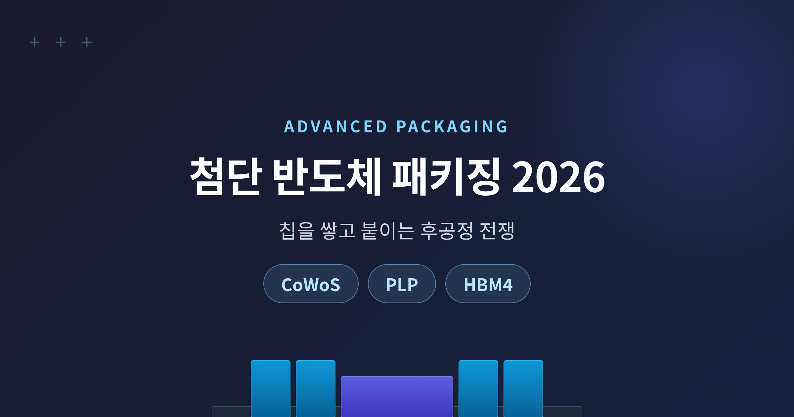
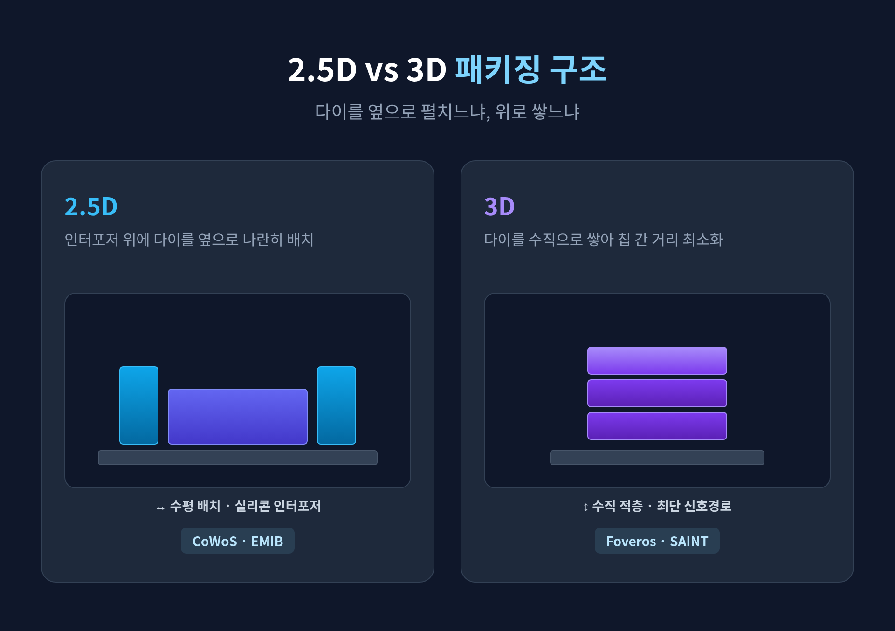
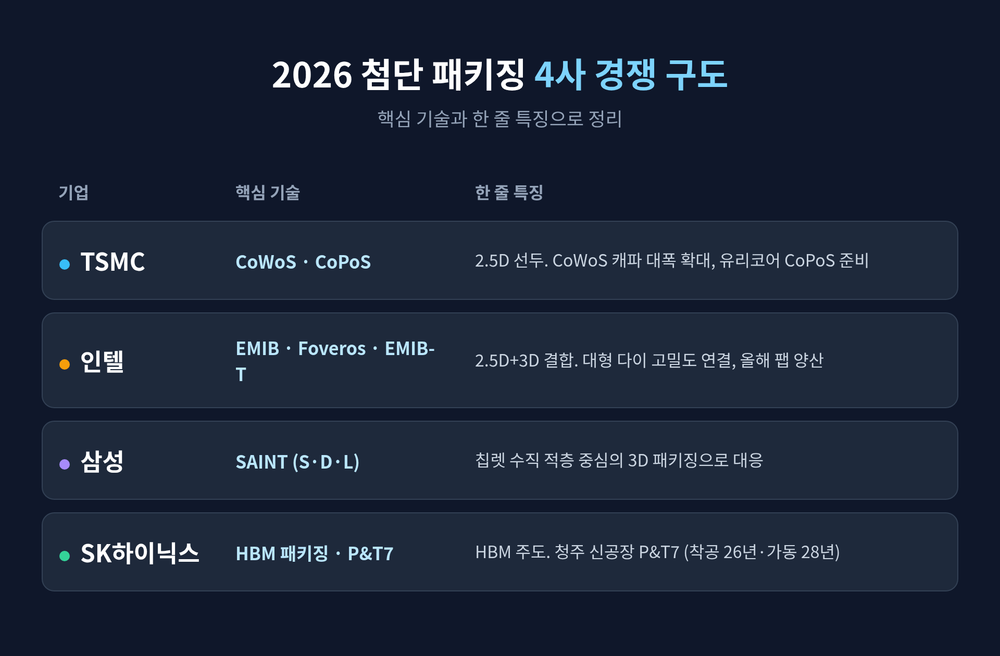

[IT] 첨단 반도체 패키징 2026 — CoWoS·PLP, 칩을 쌓고 붙이는 후공정 전쟁

이번 글에서는 2026년 첨단 반도체 패키징 경쟁을 정리해 보겠습니다.
요지는 간단합니다. AI 반도체의 승부가 이제 미세공정이 아니라, 칩을 쌓고 붙이는 후공정에서 갈리고 있다는 것입니다.
TSMC의 CoWoS, 차세대 패널 기술 PLP, 그리고 한국 기업의 위치까지 차례로 살펴보겠습니다.
왜 후공정이 승부처가 됐나
예전엔 반도체 경쟁의 중심이 트랜지스터를 더 작게 만드는 미세공정에 있었습니다.
지금은 다릅니다. 미세화가 점점 어려워지고 비용과 수율 문제가 커지면서, 여러 개의 칩(다이)을 한 패키지 안에 통합하는 후공정이 전면에 나섰습니다.
이 기술을 묶어 첨단 패키징(advanced packaging)이라 부릅니다.
신호가 이동하는 거리를 줄이고 칩 사이의 연결 수를 크게 늘려, 트랜지스터를 더 작게 만들지 않고도 성능과 효율을 끌어올리는 방식입니다.
AI 가속기(GPU)는 거대한 연산 다이와 여러 개의 고대역폭 메모리(HBM)를 한 패키지에 묶어야 합니다.
이 통합을 가능하게 하는 것이 바로 첨단 패키징입니다.
그래서 이 분야는 사실상 반도체 공급망에서 가장 좁은 병목 파이프가 됐습니다.
시장은 수백억 달러 규모로 빠르게 성장하는 중입니다.
다만 시장 정의에 따라 전망치가 크게 갈립니다 — 2026년 규모를 약 487.5억 달러로 보는 곳(Fortune Business Insights)이 있는가 하면, 약 574.6억 달러로 추정하는 곳도 있습니다.
핵심 용어 쉽게 풀기 (2.5D / 3D / 칩렛 / CoWoS / PLP)
용어가 낯설 수 있어 짧게 정리해 봅니다.
- 칩렛(Chiplet): 하나의 거대한 칩 대신, 기능별로 나눈 작은 칩 여러 개를 만들어 한 패키지에서 연결해 쓰는 방식입니다. 작은 다이는 수율이 좋습니다. 칩렛끼리 표준화된 방식으로 통신하게 만든 산업 표준이 UCIe입니다.
- 2.5D: 다이를 위로 쌓지 않고, 인터포저 위에 나란히 옆으로 배치해 한 패키지로 묶는 방식입니다.
- 3D: 다이를 수직으로 쌓아 올려 칩 사이 거리를 더 줄이는 방식입니다.
- CoWoS: TSMC의 대표 2.5D 플랫폼입니다. GPU 다이와 HBM을 실리콘 인터포저 위에 함께 올려 하나로 통합합니다. 엔비디아 AI GPU 생산의 핵심 병목 공정이기도 합니다.
- PLP(패널레벨 패키징): 둥근 웨이퍼 대신 크고 네모난 패널 위에서 칩을 패키징하는 방식입니다. 면적이 넓어 한 번에 더 많이 만들 수 있고, 점점 커지는 AI 패키지 수요에 대응합니다.

2026년 업체별 경쟁 — TSMC, 인텔, 삼성, SK하이닉스
먼저 선두는 TSMC입니다.
CoWoS 생산능력이 2024년 말 월 약 3.5만 장 수준에서, 2026년 말 월 약 12만~14만 장(추정)까지 늘어날 전망입니다. 파트너사가 더 보태집니다.
수급도 나아져, TrendForce는 CoWoS 수급 격차가 2026년 말까지 약 20%에서 약 10%로 좁혀질 것으로 봅니다.
차세대로는 유리 코어 패널 위에 패키지를 만드는 CoPoS를 준비 중입니다. 2026년에 파일럿 라인을 완공하고, 양산은 2028년 하반기에서 2029년 사이로 전망됩니다(출처별로 시점이 엇갈립니다).
인텔은 EMIB(2.5D)와 Foveros(3D)를 결합한 EMIB-T로 반격합니다.
레티클 한계를 넘는 큰 다이에서도 높은 연결 밀도를 제공하며, 올해 팹 양산이 예정돼 있습니다.
말레이시아 페낭 패키징 단지도 올해 1단계 가동을 시작합니다.
삼성은 SAINT라는 3D 패키징으로 대응합니다.
실리콘 인터포저로 잇는 대신 칩렛을 수직으로 쌓는 데 집중하며, SAINT-S·D·L 세 유형으로 나뉩니다.
다만 2026년 구체적 양산 규모는 공개 자료에서 명확히 확인되지 않습니다. 이 부분은 단정하지 않겠습니다.
SK하이닉스는 130억 달러를 들여 청주에 신공장 P&T7을 짓습니다. 착공은 2026년 4월, 본격 가동은 2028년 목표입니다.
한편 엔비디아는 2026년 전 세계 CoWoS 수요의 약 60%를 선점한 것으로 추정됩니다. 수요가 한 곳에 쏠려 있다는 뜻입니다.

HBM과 패키징, 그리고 '메모리 월'
메모리 월(memory wall)은 연산 속도는 빠르게 오르는데 메모리 대역폭이 따라가지 못해 생기는 병목을 말합니다.
2026년에는 한 단계 더 나아갔습니다. 이제는 메모리 공급과, 그것을 GPU에 붙이는 패키징 자체가 시스템 출하 속도를 결정합니다.
HBM은 DRAM 다이를 수직으로 쌓아 대역폭을 극대화한 메모리입니다.
이 HBM을 GPU 연산 다이 옆에 붙여 하나로 통합하는 것이 CoWoS 같은 첨단 패키징입니다.
그래서 HBM 경쟁과 패키징 경쟁은 한 몸인 셈입니다.
2026년부터 양산되는 HBM4는 16단 적층, 48GB 용량이 특징입니다.
실리콘을 30마이크로미터 수준까지 극도로 얇게 깎아야 해서 적층 난도가 매우 높습니다.
SK하이닉스는 CES 2026에서 16단 HBM4를 공개했고, 엔비디아와 다년 공급 계약을 맺었습니다.
한국의 위치와 과제
한국은 강력한 카드를 쥐고 있습니다. 바로 HBM입니다.
SK하이닉스는 HBM 시장을 주도하고, 삼성도 상당한 3D 패키징 역량을 보유하고 있습니다.
다만 아쉬운 대목도 분명합니다.
2.5D와 패널레벨 후공정의 생산능력 구도는 여전히 TSMC가 사실상 주도합니다.
TSMC의 capacity 제약이 경쟁사에게 좁은 진입 창을 열어줄 뿐이라는 분석도 있습니다.
결국 한국 기업의 과제는 셋으로 모입니다.
TSMC 주도 구도에서 독자·협력 입지를 확보하는 것, HBM 우위를 패키징 통합 역량으로 잇는 것, 그리고 유리 기판·패널레벨 같은 차세대 로드맵에서 뒤처지지 않는 것입니다.
끝으로 한 마디만 더 드리겠습니다.
2026년 반도체 경쟁의 무게중심은 분명히 옮겨졌습니다.
"칩을 더 작게 만드는 시대에서, 칩을 더 잘 쌓고 붙이는 시대로."
미세공정의 끝이 아니라, 후공정의 시작을 보고 있는 셈입니다.
다음 승부가 어디서 갈릴지 묻는다면, 저는 망설임 없이 패키징이라고 답하겠습니다.